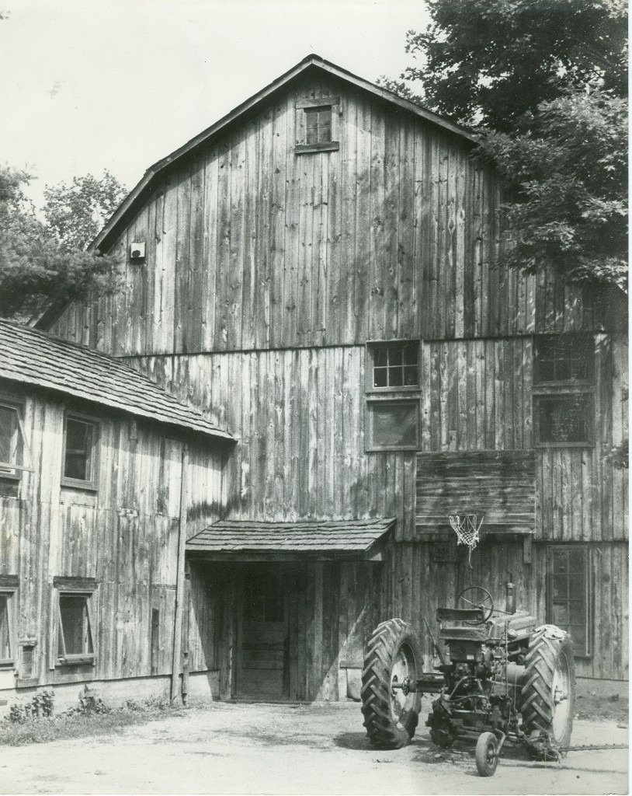
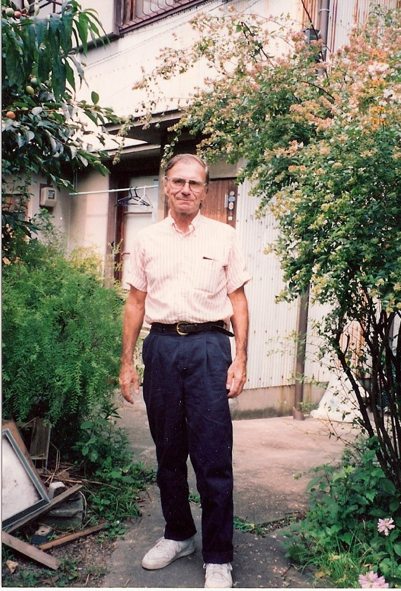
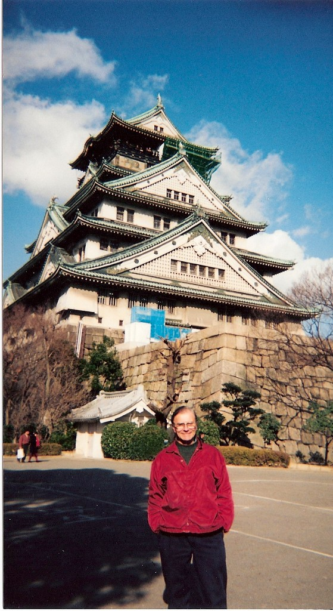
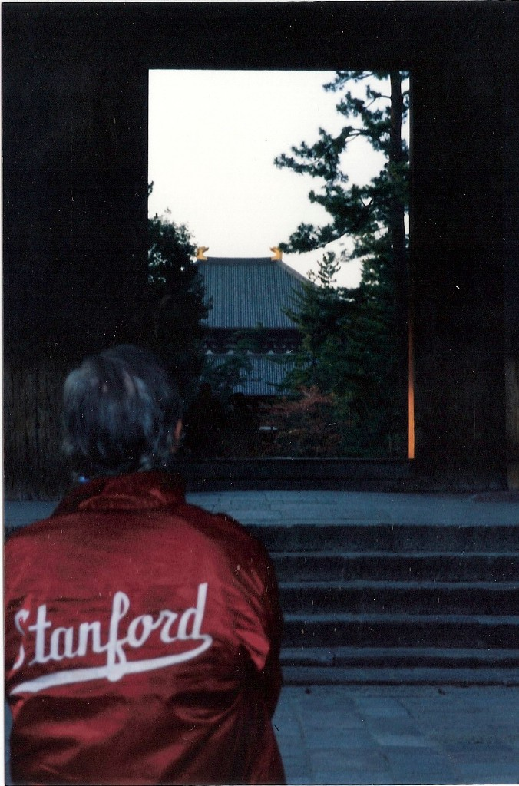
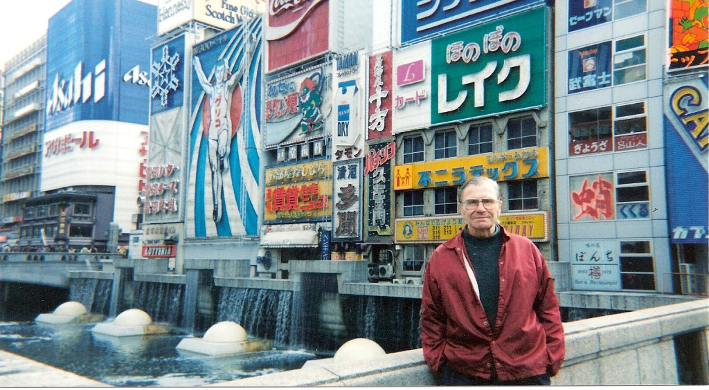

John Casman’s Eight-Year Adventure in Japan
A son’s account of a life reinvented at sixty.
My father, John Casman, was one of a kind.
After serving in the Korean War, he returned home, married my mother, Edna, and attended agricultural school for two years. He became a dairy farmer in New York, although by the time I was born, his farming days were over. He later worked as a carpenter framing houses and retail stores in Sharon, Connecticut.
Our home was a restored cow barn that inspired an endless stream of improvements, experiments, and additions. My father was interested in solar power and electric vehicles decades before either became mainstream. He was always building something, investigating something, or thinking about how things might be done differently. He was ahead of his time.

But the part of his life I want to focus on here began when he was nearly 60 years old and decided to move to Japan.
A long-standing interest in Japan
My father had been to Japan twice for R&R while serving in the Korean War. Apparently, he had always wanted to return, although I did not learn how serious that interest was until I was attending Connecticut College.
When I took an introductory Japanese literature course, he read every book assigned to me. And then read more on his own. He was always curious. He formed opinions about the characters and plots, and we would discuss the books together.
He also believed strongly in reading good primary information and thinking for yourself. The New York Post, in his estimation, was low quality. The New York Times, he would point out, might publish the full text of a presidential address.
“Read it yourself and figure it out,” he would tell me. “Don’t let other people’s analysis be your only source of information.”
Japan was near the peak of its postwar economic rise, and trade between Japan and the United States was constantly in the news. Based on things we read, we talked about Japan’s role in Asia, Article 9 of the Japanese Constitution, the controversy surrounding American military bases, and many other subjects.
For him, Japan was not simply an exotic place on the other side of the world. It was a country he had been thinking about for decades.
Starting something completely new at 60
My father had been a farmer and carpenter for most of his working life. Perhaps realizing that he could not continue doing demanding physical labor forever, he began studying Japanese at about age 58.
Then, in 1993, at age 60, he moved to Japan.
He settled in Nagoya, in central Japan. I sometimes describe Nagoya as the Pittsburgh of Japan: industrial, practical, and economically important, but not primarily known as a tourist destination.
Moving there was an extraordinary leap. He did not have an established career waiting for him, and at first he had difficulty finding steady work and an employer willing to sponsor the proper visa. But after two or three years, he had built a successful and lucrative business as an English teacher and tutor. He just made it happen.
It was wild to watch the transformation. In Connecticut, his standard outfit had been jeans and a carpenter’s tool belt. In Japan, he wore a collared shirt with clean, good-looking khaki pants. A man who had once been noticeably quiet became talkative and full of stories. I think he discovered that he genuinely loved teaching.

Learning Japanese every day
My father worked on his Japanese diligently. He did not have to do that. Foreigners in Japan were often not expected to learn much Japanese, and he probably could have managed with far less. But that was not his way.
Nearly every morning, he spent close to an hour studying vocabulary, phrases, and kanji. He complained that learning the kanji characters was the hardest part, something plenty of Japanese people would sympathize with.
When he first moved to Japan, our telephone calls would begin with a greeting or two in Japanese, and then we would switch to English. Gradually, those greetings became a few sentences. Eventually, the first five or ten minutes of nearly every call were conducted entirely in Japanese.
It was fun to compare notes with him about words, customs, and things we had noticed. We were learning together, although in very different ways.
His Japanese also opened the door to real friendships. He made many Japanese friends and became especially close to a couple in Nagoya. I visited them again last fall, in 2025, decades after first meeting them through my father.
He also got along remarkably well with my wife's grandmother in Osaka. She was in her 80s, while my father was only in his 60s. She liked him and once described him as “polite, even though he’s young.” We all thought that was hilarious.
My father did, in fact, behave very properly around her. He always arrived with an appropriate gift and listened closely to everything she said for as long as he could keep up with her heavily Osaka-accented Japanese.

He developed a full social life in Japan, with many friends and, I believe, a few girlfriends as well. He was not living on the margins of Japanese life. He was doing his best to participate in it.
Meeting in Tokyo
During the late 1990s, I was making frequent business trips between the United States and Japan. My father would take the bullet train—the Shinkansen—from Nagoya to meet me in Tokyo.
We had all kinds of adventures together. We stayed in capsule hotels, went rollerblading in Yoyogi Park, explored lesser-known temples and Japanese history, tracked down ice rinks where we could skate, and found plenty of other things to investigate.

Seeing my father in Japan was both familiar and surprising. He was still the same intensely curious, multi-talented man I had grown up with, but he had also created an entirely new version of himself. He had changed his profession, his clothes, his language, and much of his daily life. He had made that transformation at an age when many people begin narrowing their horizons.
He was expanding his.

Eight years in Japan
My father ultimately lived in Japan for eight years. He even had his eye on some beach property in Wakayama Prefecture, south of Nagoya on the Pacific coast, and appeared to be planning to remain in Japan.
Unfortunately, he became ill, and had to return to the United States. He did have some time with family. But passed away soon thereafter at age 67.
There is a strange irony in the fact that many of my Japanese friends may never realize that some of my best memories of my father are intricately connected to Tokyo and to Japan more broadly.
Looking back, I think he treated every last second of those eight years as a grand adventure. Watching him completely reinvent his life was impressive, exciting, and occasionally a little unbelievable.
I believe if there is something you truly want to do, it is worth beginning, even when the timing looks all wrong.